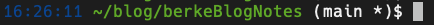
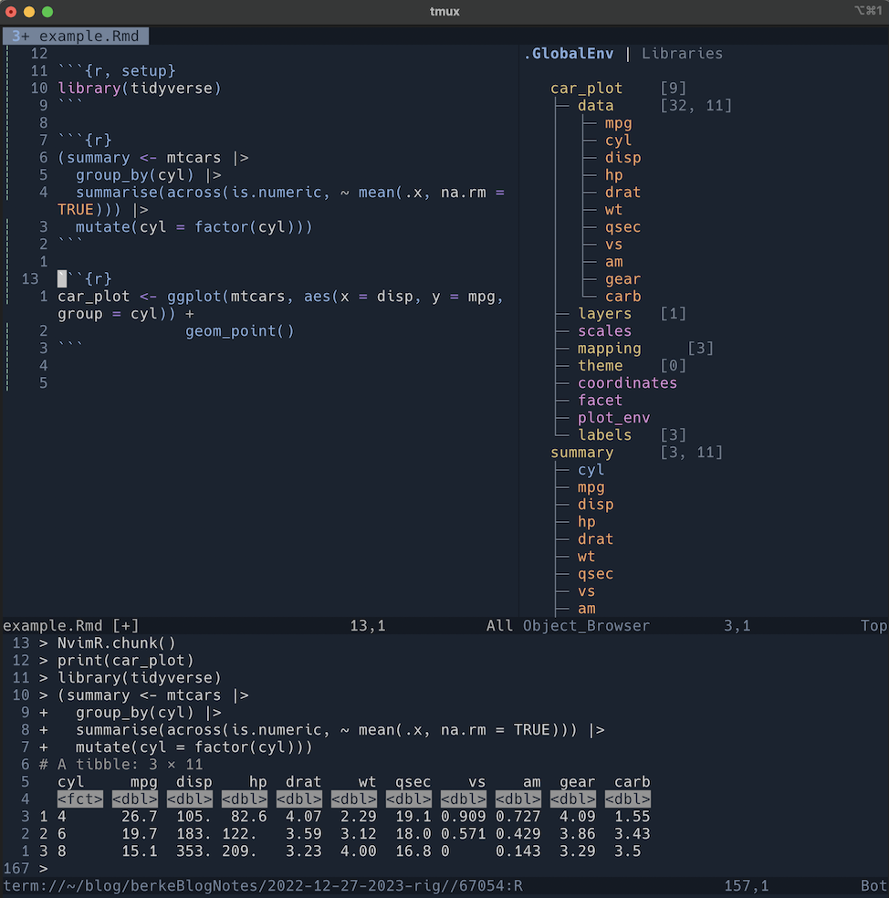

install.packages(c(
devtools,
usethis,
roxygen2,
tidyverse,
lubridate,
testthat,
googleAnalyticsR,
bigrquery
))2023 data science rig: Set up and configuration
tutorial
Overviewing and reflecting on my current data science setup.
What the new year brings to you will depend a great deal on what you bring to the new year.
– Vern McLellan
Background
Recently, I read a blog post written by Isabella and Gustavo E. Veláquez. In the post, the authors discussed the setup of their 2023 data science rig. While reading, I became inspired to write this post reflecting on and documenting the data science rig I’m bringing into 2023.
With a new year comes an opportunity to reflect. My intentions for writing this post are to create a documented snapshot of my current setup, learn more about the tools I use, and reflect on the setup used in my day-to-day workflow. Moreover, this post serves as setup documentation in case I need to switch machines or setup a new working environment.
In this post, I will highlight the use, setup, and configuration of the following components of my data science rig:
- Hardware
- Operating system
- Terminal
- R setup
- Neovim as an integrated development environment
Although an attempt will be made to provide a comprehensive overview of all the tools I use, this post focuses on the ones I use most often. In reality, I won’t be able to detail every tool used within my workflow. On top of that, this post would become too lengthy if every aspect of my configuration was discussed. So whenever possible, I provide links to additional documentation or files that might be helpful. I also make files pertaining to my setup available in this repo here. Check them out if you want an abbreviated version of this post.
Hardware
My daily driver machine is a 2019 16-inch MacBook Pro. It has a 2.6GHz 6-Core Intel Core i7 processor and 16GB of ram. I had no specific use case in mind when I purchased this machine. However, I knew at the time my workflow wouldn’t require a robust amount of resources. As such, I really didn’t foresee the need for any major hardware upgrades. In cases where I need more robust computing resources, I opt for cloud resources instead. Thus, my machine is a pretty vanilla, off-the-shelf setup.
As for keyboard, I’m working with the Keychron K2 wireless mechanical keyboard. I’m a fan of the compact design. The keystorke is quite satisfying, especially for long, marathon work sessions. The backlit LEDs are also a nice aesthetic touch. Occasionally, I’ll work with my Ducky One 2 Horizon. The keystroke on this keyboard is not as comfortable as the Keychron K2, but it’s good to switch it up from time to time.
Headphones and earbuds are pretty standard. Daily I’ll use my Apple Airpods Pro. I’m a huge fan of the noise cancellation and the streamlined integration with my other Apple devices. My other option is my over-the-ear V-moda Crossfade LPS headphones. I’ve had these for years (2011 I think), and I still use them occasionally.
Operating system
Since I’m working with a Mac, it should be no surprise that I’m using the macOS operating system. Currently, I’m running the most recent major release, macOS Ventura (13.1 to be specific). In fact, while drafting this post, I was reminded to update my operating system.
A few extra configs to the operating system
I also like to customize the appearance, system keymappings, and terminal aliases (more on this in the section on setting up Zsh) of my operating system. For one, I’m a fan of dark mode, so I set the system settings accordingly. I’m also a minimalist when it comes to the menu dock. I prefer to only include shortcuts that are necessary to my workflow. I also like to change the settings to automatically hide the dock when it’s not being used. I do this to maximize my workspace area. Here is a link to some docs if you’re interested in modifying your macOS system settings.
The caps lock key is useless in my workflow. Instead, I remap the ctrl key to the caps lock key. This is mostly done out of convenience, as I’ll use my machine as a true laptop from time to time. This is also essential because my IDE, Neovim, requires extensive use of the ctrl keys (more on the use of Neovim later). Since the MacBook Pro does not include a right-hand side ctrl key, and the left-hand side ctrl key is not in a comfortable position, this remap affords me some additional comfort when I use my machine as a laptop.
Homebrew
Homebrew coins itself as the missing package manager for macOS (or Linux). It makes downloading open-source software much easier. Downloading and installing Homebrew is straight forward. Run the following command in a terminal to download Homebrew:
/bin/bash -c "$(curl -fsSL https://raw.githubusercontent.com/Homebrew/install/HEAD/install.sh)"If you need more specific instructions on downloading and installing Homebrew, check out the docs I linked above. With the Homebrew package manager installed, it’s a cinch to download other tools.
Terminal
iTerm2 is the next tool to install. iTerm2 is a terminal emulator, and it is an alternative to Apple’s Terminal app. It is a modern, updated terminal with additional features that enhance the terminal experience beyond the Mac terminal. You can get a rundown of some of these features here.
Using Homebrew, iTerm2 can be downloaded by running the following in a Mac terminal window.
brew install --cask iterm2Once installed, all further terminal use is through iTerm2.
Oh My Zsh
Now it’s time to unleash the terminal by downloading Oh My Zsh. Download Oh My Zsh by running the following in your terminal:
sh -c "$(curl -fsSL https://raw.githubusercontent.com/ohmyzsh/ohmyzsh/master/tools/install.sh)"Oh My Zsh’s docs contain the best description of what it does:
Oh My Zsh will not make you a 10x developer…but you may feel like one.
– Zsh docs
For reals though, Oh My Zsh is a convenient, intuitive means to configure your terminal. For one, it allows plugin installation. Plugins enhance the terminal experience and extend its utility. The following is a list of Zsh plugins I find useful:
gitzsh-syntax-highlightingfor terminal syntax highlighting.zsh-autosuggestionsfor command suggestions based on previous history.
Customized Zsh prompt
Another great feature of Zsh is the ability to customize the command line prompt. Many options are available. For me, I like the prompt to contain four pieces of information:
- The time (24-hours with seconds);
- The file path of the current working directory;
gitbranch information;- An indicator if any uncommitted changes exist in the directory.
Here is what my prompt looks like:

To achieve this custom setup, I place the following into my .zshrc file:
# Prompt formatting
autoload -Uz add-zsh-hook vcs_info
setopt prompt_subst
add-zsh-hook precmd vcs_info
PROMPT='%F{blue}%*%f %F{green}%~%f %F{white}${vcs_info_msg_0_}%f$ '
zstyle ':vcs_info:*' check-for-changes true
zstyle ':vcs_info:*' unstagedstr ' *'
zstyle ':vcs_info:*' stagedstr ' +'
zstyle ':vcs_info:git:*' formats '(%b%u%c)'
zstyle ':vcs_info:git:*' actionformats '(%b|%a%u%c)'Indeed, this might not be the custom prompt for everyone. So, the following are links to blog posts that do an excellent job describing how to customize the different prompt elements:
- Customizing my Zsh Prompt by Cassidy Williams
- Customize your ZSH prompt with vcs_info by Arjan van der Gaag
Terminal aliases
This year, I focused on transitioning to a more terminal based workflow. As part of this transition, I began utilizing terminal aliases. Aliases can be used to automate common tasks, like opening specific programs, web pages, or project files from the terminal.
With Zsh, creating aliases is pretty straightforward. To do this, you’ll need to place a file into the ~/oh-my-zsh/custom directory. This file can be named anything, but it needs to end in the .zsh extension. In this file you can include aliases like the following:
# aliases to improve productivity
alias email="open https://path-to-email.com/mail/inbox"
alias calendar="open https://path-to-calendar.com/"
alias projects="open https://path-to-github-projects.com/"Now if you run email in your terminal prompt, a browser window with your email inbox will open. The above is just an example to get you started. I have additional aliases beyond the ones in the example. To get an idea of all the aliases I use, check out the dotfile here. You can customize any of these to your specific needs.
The rest of my Zsh configuration is pretty standard. Here is a link to a repo containing additional files to configure Zsh. Check it out if you’re interested in seeing how I specifically do something.
Additional terminal utilities
Jump
Navigating the file system from the terminal can be tiring. Jump is a terminal utility that solves this problem. Simply put, this utility learns your navigational habits and allows you to easily jump back and forth between directories with very little typing.
Install jump using Homebrew. Run the following code in your terminal to install Jump:
brew install jumptmux
tmux is a terminal multiplexer. It lets you create multiple windows and terminals in a single session. I find it useful in situations where you want multiple files, projects, or terminal windows to be open while you’re working.
Install tmux using Homebrew:
brew install tmuxAlthough tmux is useful out of the box, some configuration steps are needed to make it more useful. My configuration mostly changes tmux’s keymaps, which makes them easier to remember and use (i.e., some of the defaults require some keyboard gymnastics).
Much of my tmux configuration is a derivative of the one discussed in the Getting Started with: tmux YouTube series from Learn Linux TV. If you want some more specific detail, you can check out my .tmux.conf configuration file here.
git
I use git for version control. Homebrew can be used to install git:
brew install gitSome additional configuration is needed for the local setup of git. Run the following code in the terminal. Make sure to replace what is in quotations with your information.
git config --global user.name "<full-name>"
git config --global user.email "<email>"
git config --global core.editor "nvim"The user.name and user.email variables are required. You can exclude the core.editor configuration if you want to use the default editor. However, I like to use Neovim (more on Neovim in a later section) as my text editor, so I make it my default when working with git.
Along with git, I use GitHub for remote repositories. Some additional steps are needed to authenticate with this service. The GitHub CLI tool simplifies these steps.
GitHub’s CLI tool
Bring GitHub to your command line with the GitHub CLI. This tool provides commands to do many of the same things you do on GitHub, but with terminal commands. Need to create an issue in a repo, run the following in your terminal:
gh create issueWant to see all the pull requests in a repo needing review, run the following in your terminal:
gh pr listYou can also use these commands within aliases to streamline your workflows. I particularly like my custom aliases to list and create issues and PRs.
# Custom alias to list GitHub issues
.il
# Custom alias to create an issue
.icHomebrew, again, is used for the installation.
brew install ghAuthenticate using the GitHub CLI
Once installed, run the gh auth login command to walk you through the authentication flow. During the flow, you’ll have to make a few decisions. Your first decision will be the protocol you want to use for git operations. I select HTTPS. Second, you’ll need to decide how you want to authenticate the GitHub CLI. I select the web browser setting out of convenience. If you’re interested in other forms of authentication, I suggest checking out GitHub’s docs.
One minor, additional configuration step is to set Neovim as the default editor for use with the GitHub CLI. If you want to use the default editor, then skip this step. To modify the default editor, run the following command in the terminal:
gh config set editor nvimR setup
The next step is to download R. In the past, I would go to CRAN and manually download the latest version. Now, there’s a better way, rig, the R Installation Manager.
Install rig
Homebrew handles the installation of rig. Run the following in your terminal:
brew tap r-lib/rig
brew install --cask rigInstall the most recent version of R
Once rig is installed, download the most recent version of R by running the following in the terminal:
rig addOnce the most recent version is downloaded, you can verify the installation was successful by printing out a list of all the R versions installed on your machine. If this is a fresh start on a new machine or it’s your first time downloading R, you should only see one version listed.
rig listDownload RStudio
Although I have made the switch to using a different IDE (more on this in the next section), I still teach classes and present to groups who mainly use RStudio. So to keep everything up to date and in synch, I download the current version of RStudio using Homebrew:
brew install --cask rstudiorig also makes it easy to open up a new session of RStudio from the terminal. To do this, run the following in the terminal:
rig rstudioInstall R packages
This section overviews the installation of R packages I use most often. Indeed, it would be excessive to download and overview all the packages in my workflow. In addition, the following sections contain a brief description of what each package does and how it is used when I work with R.
The following code downloads packages I rely on most. If you use R, many of these packages will be familiar.
If you’re unfamiliar with loading packages in R, you’ll need to run this code an R console. This can be done either in RStudio or via an iTerm2 system terminal. From the system terminal, type the letter R and hit Enter. Doing this should change your terminal prompt, as you are now running in a R session. You’ll then run the code from above. Information will be printed to the terminal during the installation of the packages.
Once all these packages have been installed, run the quit() function to return back to the system’s original prompt. When quitting this R session, you may be prompted to save the workspace. Enter no, as there is no need to save this session’s information. The next few sections provide a brief description of how each of the installed packages are used within my workflow.
devtools
The aim of devtools is to make your life as a package developer easier by providing R functions that simplify many common tasks.
–
devtoolspackage docs
Simply put, I rely on devtools for package development. This package provides many convenience functions to manage the mundane tasks involved in package development.
usethis
usethis is a workflow package. It automates many tasks involved when setting up a project. It also contains convenience functions to help with other R project workflow tasks. I’m still exploring all the package’s functions, but using the one’s I’ve learned have made me more productive.
roxygen2
Packages need documentation. The roxygen2 package helps with the documentation setup and development process. If you’re familair with comments in R, you’ll find writing package documentation with roxygen2 intuitive.
tidyverse
tidyverse is mainly used for common data wrangling and analysis tasks. Although I use base functions from time-to-time, I learned R by using tidyverse packages; they’re ingrained throughout my workflow.
Indeed, the tidyverse is not just a single package, but a collection of packages. Some of the tidyverse packages I rely on most often include:
lubridate
lubridate is magic when it comes to working with date-time data. I use this package mostly to handle data with a time dimension, which usually occurs in cases where I’m working with and analyzing time series data. If you work with date time data, look into using lubridate.
testthat
The testhat package is used for writing tests (e.g., unit tests) for code, especially when developing a package. To write more robust code, it’s best practice to write tests. testthat provides a framework and several convenience functions to make composing tests more enjoyable.
googleAnalyticsR
Part of my work involves the analysis of web analytics data. Much of this data is collected with and made available via Google Analytics. googleAnalyticsR is a package that allows you to authenticate and export web analytics data using the Google Analytics Reporting API.
bigrquery
Google BigQuery is a data warehouse and analytics solution. To access data via its API, I rely on the bigrquery package. This package provides multiple convenience functions to extract, transform, and load data from and into BigQuery. bigrquery also provides several functions to perform some BigQuery administrative tasks.
The packages highlighted above are ones I rely on most often in my day-to-day workflow. Indeed, others are used less frequently, especially when performing specific analysis tasks. However, the use of some packages is project dependent and describing all the packages I use would be outside the scope of this post.
Google Cloud Command Line Interface (CLI)
I mainly use the Google Cloud Platform (GCP) for cloud based project development. Although I’ll use GCP’s web portal occasionally, the command line interface provides some useful utilities to work from the terminal. The Google Cloud CLI is made available by installing the Google Cloud Software Development Kit (SDK).
Google BigQuery, a data warehouse solution, is a GCP service I use quite often. The Google Cloud CLI has the bq command, which is an interface with BigQuery. I also manage some compute instances in the cloud, so I use the gcloud compute instances command as well.
Installing the Google Cloud SDK
Install the GCP SDK with Homebrew. To download, run the following code in your terminal:
brew install --cask google-cloud-sdkSetting up my integrated development environment
This past year, the biggest change to my workflow was the switch to Neovim for my IDE. For several years, the majority of my development work was done using Posit’s IDE, RStudio. I can’t express how much I love RStudio. It was the editor I first learned to code in. However, this year I felt my ability to improve my productivity in RStudio plateaued. I also began wanting more freedom to configure my development environment specifically to my workflow. So, I began to explore alternatives.
I went back to VS code for a time, as it is a popular editor for many. Some of VS Code’s features I really liked, and the ability to work with many different programming languages in the same environment was appealing. In fact, for a time, I considered committing my entire workflow over to VS Code. Then, I was introduced to Vim.
Vim is a highly configurable text editor. My first interaction with Vim–like most people–was when I was learning to use git several years ago. In fact, I had the all to common experience of not being able to exit Vim (:wq). Although I wrote all my commit messages in Vim, It never really piqued my interest.
However, I was formally introduced to Vim while watching other’s program online. Watching proficient Vim users was mind-blowing. I mean, just watch this series from ThePrimeagen. It just seemed like a superpower. It was just so blazingly fast. Once I saw it used proficiently, I knew I wanted to learn it.
At first, the setup was rough, and the learning curve was very steep. I even switched back to RStudio for a bit, where I attempted to learn Vim by turning on RStudio’s Vim mode. It just wasn’t the same. One of the big selling points for using Vim is it’s designed to keep your hands on the keyboard as much as possible when editing text. However, my workflow in RStudio required me to jump back-and-forth between different windows (e.g., jump to the terminal; jump to the file explorer; and jump to the console), which I usually used the mouse to do. I knew RStudio had keyboard shortcuts, but they felt clunky and took too much cognitive effort to remember. Frustration set in, so I went all in on learning how to use Vim.
Setting up and learning how to use Vim can be a whole series of blog posts in and of itself. So, my intention in the following section is to highlight some of the Neovim setup. As much as possible, in places where I gloss over details, I’ll link to some resources that provide more depth on the specific subject. I will also point out some tools I find useful while working in Neovim. I also have to be up-front that I’m still learning how to properly configure Neovim. As such, make sure to read the linked docs and review other setups to ensure you are setting up Neovim correctly for your specific needs. My setup is constantly evolving (i.e., breaking) as I continue to learn.
Neovim
To be honest, there was no real reason why I chose Neovim. I just saw others using and suggesting to give it a try. I did briefly read some of the arguments for why Neovim is a good choice, though. From my shallow reading of the topic, most of the arguments I came across pertained to Neovim’s use of the lua programming language, a better plugin management experience, and some additional points that made it appealing. In fact, Neovim is considered to be an extension of Vim, rather than its own stand-alone text editor. It aims to be extensible, usable, and retain the good parts of Vim. Now, I haven’t developed a sufficient understanding of these arguments to fully articulate the benefits of using one Vim like editor from another. I just know I’m enjoying it thus far. I suggest giving it a try.
Installing Neovim
Homebrew is used to download Neovim.
brew install neovimConfiguring Neovim
As mentioned in the intro to this section, Neovim’s setup and configuration can be its own series of posts; there are so many options and plugins available. The focus of the following sections is to draw attention to some of the tools I find useful when working in Neovim. Keep in mind, the configuration of Neovim is a bit of a learning curve. It can be frustrating when you first start, but very rewarding at times. You can review my configuration files here.
My Neovim setup is based on chris@machine’s Neovim from Scratch YouTube tutorial series. This series does an excellent job overviewing a complete Neovim setup using the Lua programming language. While my setup is mostly based on the one described in this series, I have added some custom configuration for my specific workflow.
Neovim package manager
I use packer for plugin management. Packer simplifies plugin installation. For example, here is the Lua code to install some plugins I highlight in the following sections:
return packer.startup(function(use)
use("wbthomason/packer.nvim") -- Have packer manage itself
use("jalvesaq/Nvim-R") -- Tools to work with R in nvim
-- Colorschemes
use("lunarvim/colorschemes") -- A selection of various colorschemes
use("tomasiser/vim-code-dark")
use("EdenEast/nightfox.nvim")
use("folke/tokyonight.nvim")
-- LSP
use("neovim/nvim-lspconfig") -- enable LSP
use("williamboman/mason.nvim")
use("williamboman/mason-lspconfig.nvim")
-- Telescope
use("nvim-telescope/telescope.nvim")
-- Treesitter
use({
"nvim-treesitter/nvim-treesitter",
run = ":TSUpdate",
})
-- Git
use("lewis6991/gitsigns.nvim")
use("tpope/vim-fugitive")
if PACKER_BOOTSTRAP then
require("packer").sync()
end
end)This code might not make much sense, as I only included a snippet of the code needed to install plugins I use most often. It’s mainly intended to show with a few lines of code, packer can manage all the plugin installation steps. This example code deviates slightly from the original packer docs on how to install plugins. Check out the previously linked docs if you would like an alternative setup while using Packer.
Here is a link to a file with all the plugins I use in my setup. Admittedly, some plugins are carry overs from chris@machine’s YouTube series, and I will fully admit I’m still learning the reason why some of these plugins are present within my configuration. Thus, my setup is not as lean as I would like it to be. But hey, I’m still learning.
Neovim plugins
Nvim-R
Since I mostly work with R, I use Nvim-R to write code and interact with the R console directly in Neovim. Nvim-R provides utilities to have the Vim experience, while also affording interactive analysis right at your fingertips. Here is what a session using Nvim-R looks like:

The power of Nvim-R comes from its predefined keybindings keybindings, which allow you to quickly and easily do interactive analysis tasks using just a few keystrokes. I’ve found it’s the best option to work with R in Neovim. A whole blog post could be written about the use of Nvim-R, and I only hit the highlights here. I highly suggest checking it out if you’re looking to write R code with Neovim.
vim-devtools-plugin
As mentioned above, I use devtools for package development. To leverage its functionality in Neovim, I use the vim-devtools-plugin. This plugin provides several convenient commands to run different devtools functions. This is especially useful as you can configure keymaps to these commands for added convenience and speed.
Telescope
Find, filter, preview, and pick. Telescope is great at these actions. Specifically, Telescope is a fuzzy file finder. However, it provides additional features that go beyond just working with a project’s files. I’m attempting to use it more and more in my workflow, as I mostly use it to find and navigate to specific files. However, I’ve begun to explore more of its functionality and integration with git.
vim-fugitive
Do yourself a favor, use vim-fugitive. Fugitive is a plugin that helps you work with Git while working in Neovim. In the past, my git and GitHub workflow was mainly done from the command line. However, jumping in and out of Neovim back to run this workflow became old quickly. To solve this, Fugitive provides the :Git or :G command to call git commands directly from the editor. Also, since I use Neovim as my editor for commit messages, I’m able to directly compose them without having to leave my current Neovim session.
LSP
Neovim supports the Language Server Protocol (LSP). LSP provides many different features. This includes go-to-definition (a great feature that speeds up editing), find references, hover, completion, and many other types of functionality. Most IDEs have LSP set up out-of-the-box. This is done so you can get started quickly working with any language without too much configuration.
Neovim does provide an LSP client, but you’ll have to set up the individual servers for each language you would like to work with. This sounds harder then it is, but it does take a few steps to complete. A good rundown can be found in this video here, which is from the Neovim series I linked above. I recently made the switch over to the Mason plugin, which makes LSP server management so much simpler. I would suggest checking it out if you’re intending to work with other languages in Neovim.
I’m still learning about LSP and how to set it up. I highly suggest reading up on the docs and reviewing other’s setups rather than relying solely on mine. Mine is still a work in progress.
nvim-treesitter
Setting up syntax highlighting is another important step when setting up Neovim. I use nvim-treesitter to improve the syntax highlighting within Neovim. This is another advanced topic I’m still learning about, so I just use a basic setup. You can read more about it in the plugin docs linked earlier.
Custom Neovim keymaps
Since Neovim is all about customization of your development environment, one thing to modify is Neovim’s keymaps. To configure, you just have to define the configuration in your Neovim config files. For example, the following is some code I use to customize my keymap setup.
-- BigQuery keymappings
keymap("n", "<C-b>", ":w | :! bq query < % --format pretty <CR>", opts)
-- R coding keymappings
keymap("n", "\\M", "|>", opts)
keymap("i", "\\M", "|>", opts)
keymap("n", "<leader>ts", ":RStop<cr>", opts)
keymap("n", "tt", "<Esc><C-w><C-w>i", opts)
-- R devtools keymappings
keymap("n", "<leader>I", ":RInstallPackage<Esc>", opts)
keymap("n", "<leader>L", ":RLoadPackage<Esc>", opts)
keymap("n", "<leader>B", ":RBuildPackage<Esc>", opts)
keymap("n", "<leader>E", ":RCheckPackage<Esc>", opts)
keymap("n", "<leader>T", ":RTestPackage<Esc>", opts)
keymap("n", "<leader>D", ":RDocumentPackage<Esc>", opts)I have additional custom keymappings in my setup, but including the entire file would be too much for this post. Nevertheless, you can access my keymapping configuration files to get a sense of other keymaps I have within my setup.
Closing thoughts
In this post, I overviewed the data science rig I will be bringing into 2023. Specifically, I spent time discussing the hardware, operating system, terminal, R setup, and Neovim configuration I use for my workflow. It is my hope that this post provides a snapshot of my current setup, so I can quickly configure my rig on another machine in the future. Additionally, I hope others find value in this post by seeing the tools I use and the configuration implemented for each. All the configuration and dot files for my setup can be found in the public repo here.
In total, this post served as a reflection of my current setup, and it was an opportunity to evaluate the state of my current data science rig I’m brining into 2023. Writing this post also peaked my curiosity about other’s rigs. I would love to hear more about the setups other’s are bringing into 2023. If you’re willing to share, reach out.
Reuse
Citation
BibTeX citation:
@misc{berke2023,
author = {Berke, Collin K},
title = {2023 Data Science Rig: {Set} up and Configuration},
date = {2023-01-29},
langid = {en}
}
For attribution, please cite this work as:
Berke, Collin K. 2023. “2023 Data Science Rig: Set up and
Configuration.” January 29, 2023.